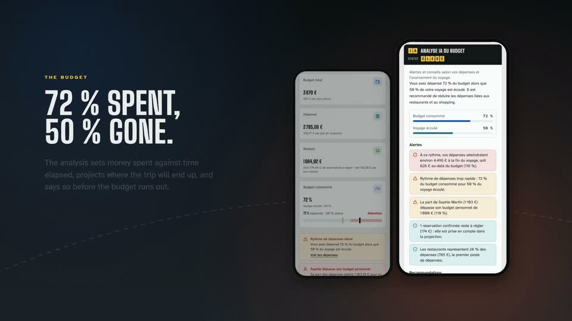
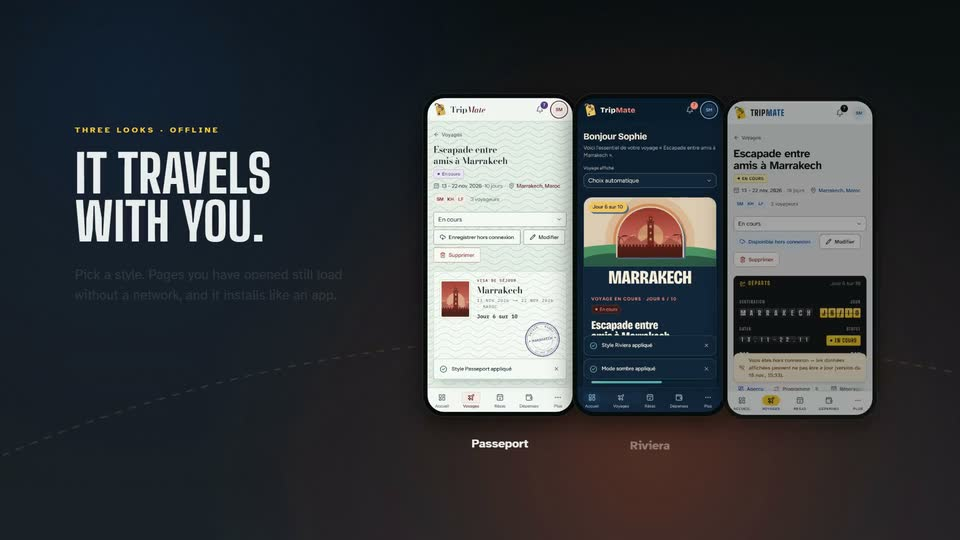
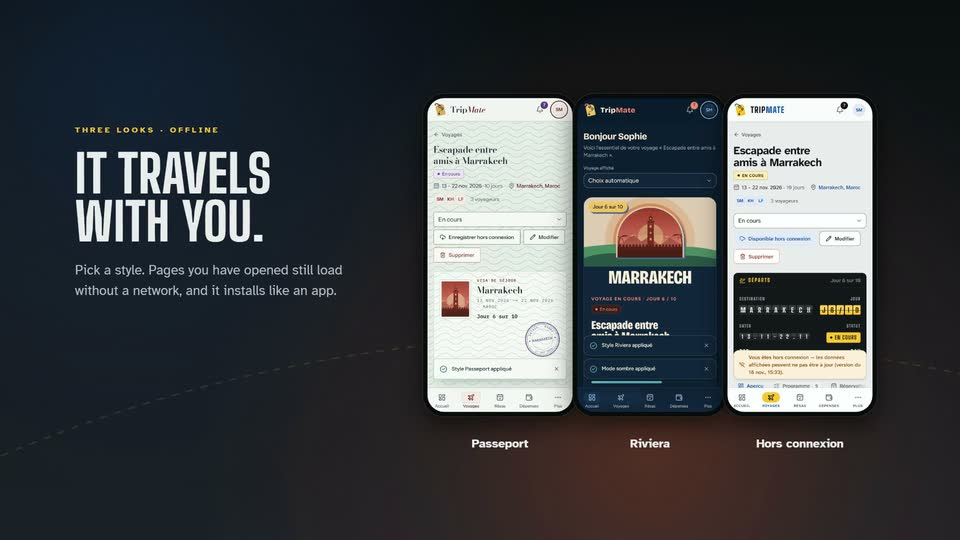
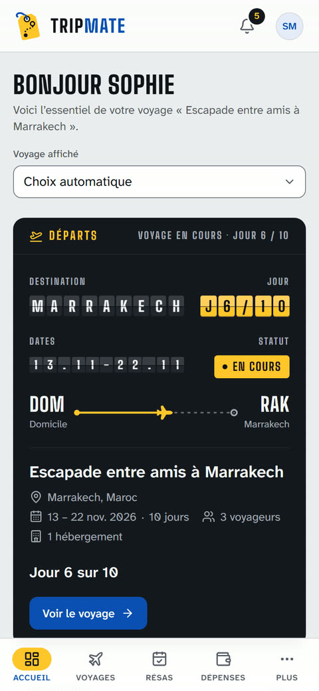
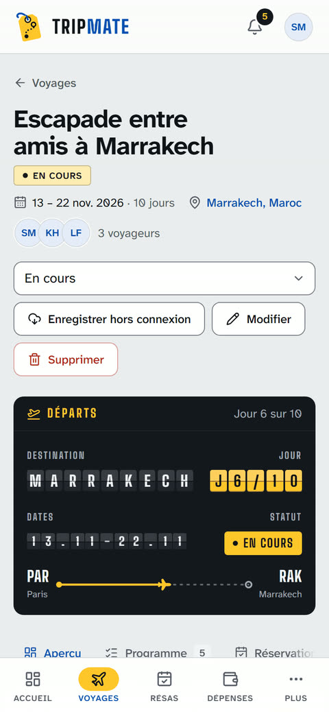
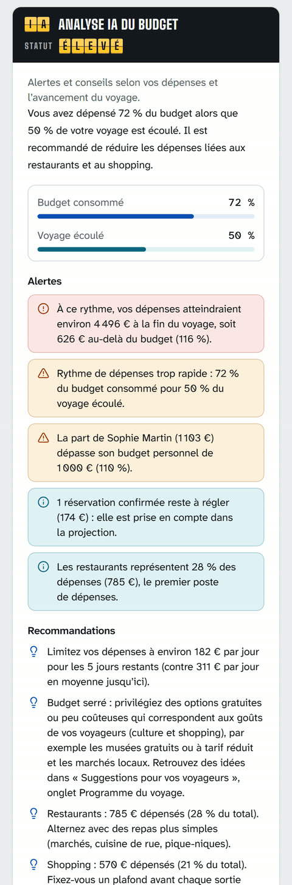
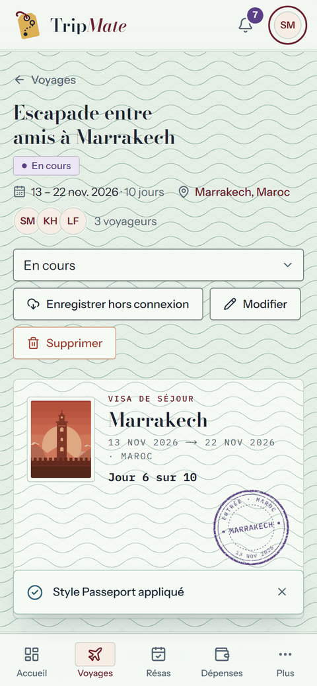
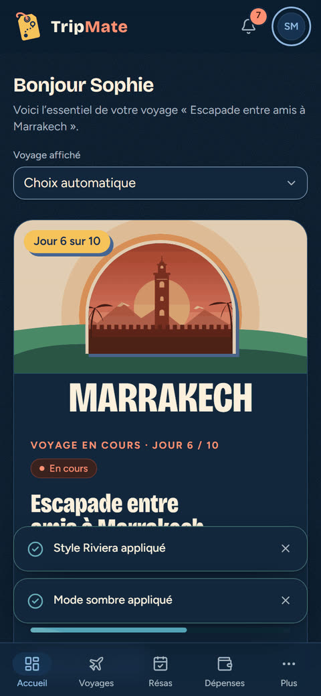

TripMate
A travel planner whose budget analysis warns before the money runs out — and whose AI never sees a traveller's name.
Overview
A travel planner, live at tripmate-tn.vercel.app: travellers, destinations, stays, activities, bookings and shared expenses around one trip, which opens like an airport departures board. The budget is the point. A 708-line rules engine sets money spent against time elapsed, projects where the trip will end up and raises alerts at 75, 90 and 100 % — 72 % spent at 50 % of the trip is flagged with the projected overshoot in euros. Gemini or Claude can rephrase that analysis, but they receive totals and category shares only, never a traveller's name, email or note; the one typed string they do see, the destination, is fenced as data rather than instructions, and any error or timeout falls back to the rules engine's own text. Three visual styles, each light and dark, and an installable app whose opened pages still load offline. Next.js 16 and React 19 over MongoDB: 34 API routes, 12 models, 38 test files.
Problem and objectives
A trip's budget usually gets checked after it is gone. TripMate sets money spent against time elapsed every day of the trip, and says so while there is still time to adjust.
- Plan travellers, stays, activities, bookings and shared expenses around one trip
- Flag overspending against the calendar, with a projection to the last day
- Let a language model help write the advice without handing it personal data
Architecture
Browser app
Next.js 16 · React 19 · PWA
Installable; pages you have opened still load offline, and a trip can be saved for offline.
- Browser app Next.js 16 · React 19 · PWA — Installable; pages you have opened still load offline, and a trip can be saved for offline.
- API routes 34 routes · Zod — Validated on the client and the server; JWT sessions in an httpOnly cookie.
- Rules engine 708 lines — Budget against time elapsed, a projection, top categories, alerts at 75, 90 and 100 %.
- Language model Gemini or Claude — Rephrases the analysis from totals and category shares; any failure falls back to the rules text.
- MongoDB Mongoose · 12 models — Trips, travellers, destinations, stays, activities, bookings, expenses.
Engineering challenges and decisions
- Budget spent set against trip elapsed, projected to the last day, alerts at 75 / 90 / 100 %
- The model gets totals and category shares — never names, emails, trip titles or notes
- Destination text fenced as untrusted data; any model failure falls back to the rules engine
- Passeport, Départs and Riviera styles, light and dark; installable, with save-for-offline per trip
Technologies
Also in use: Gemini API, Anthropic SDK, JWT, Vercel.
My contribution
Solo build. I am the only committer on the repository.
Screens
Stills from the demo film, then screens captured from the running app.








Results
- Live
- at tripmate-tn.vercel.app
- 34
- API routes
- 12
- data models
- 38
- test files